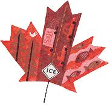

It's more than just your paint job at stake.
It may melt slippery ice, but at what cost to the environment? Environment Canada, a science-based department of the Canadian government, has concluded that wintertime road salts do more than mess up your car's paint job.
In a five-year study, the group found that road salts are toxic to plants, wildlife, lakes, streams and ground water, prompting Environment Canada to add road salts to the Canadian Environmental Protection Act's (CEPA) list of toxic substances.
To remedy the problem, Environment Canada's recommendations include improving storage techniques to prevent seepage; diluting snow piles at disposal sites to minimize soil and groundwater contamination; and reducing overall use during roadway application.
As new technology helps increase road safety, lo cal workers help decrease salt use. Canada's Road Weather Information Systems (RWIS) uses a combination of automated weather stations and sen sors to predict road temperatures. The information helps forecasters better predict icy conditions and enables road crews to know when and how much to salt. In the future, RWIS will produce road surface temperature forecasts for entire road networks to help reduce road salt use by as much as 30%.
-Michael Asprion
|
 |
|
|